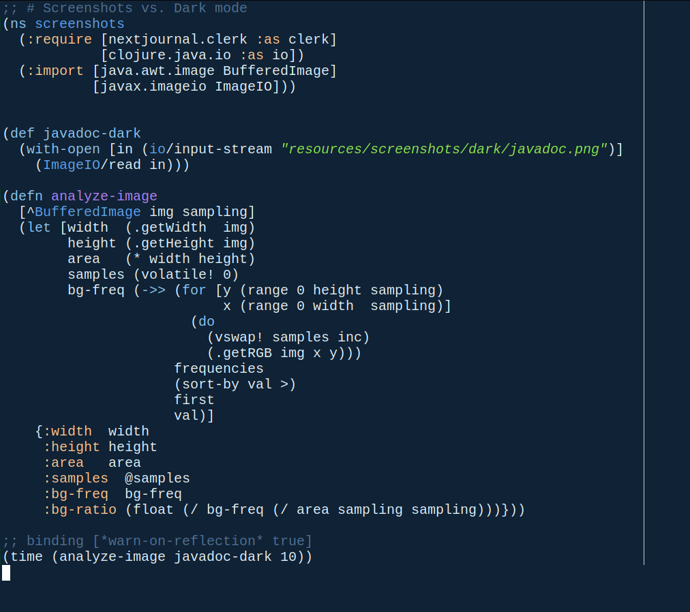
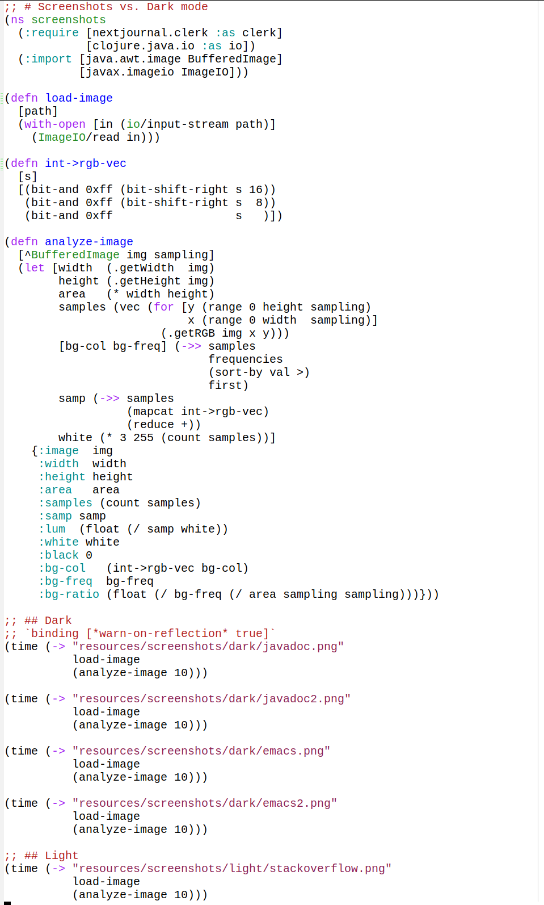
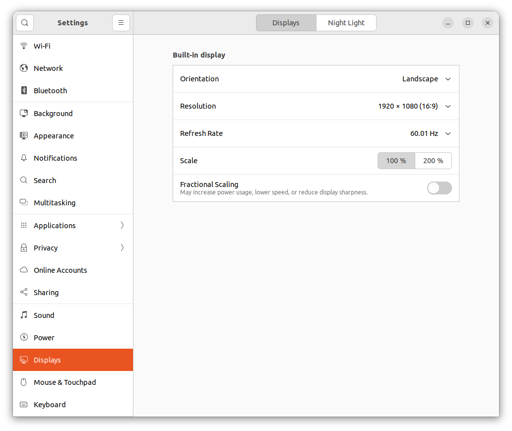
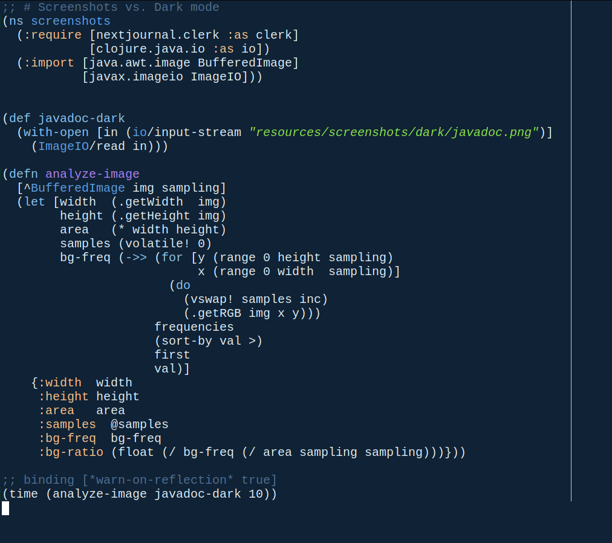
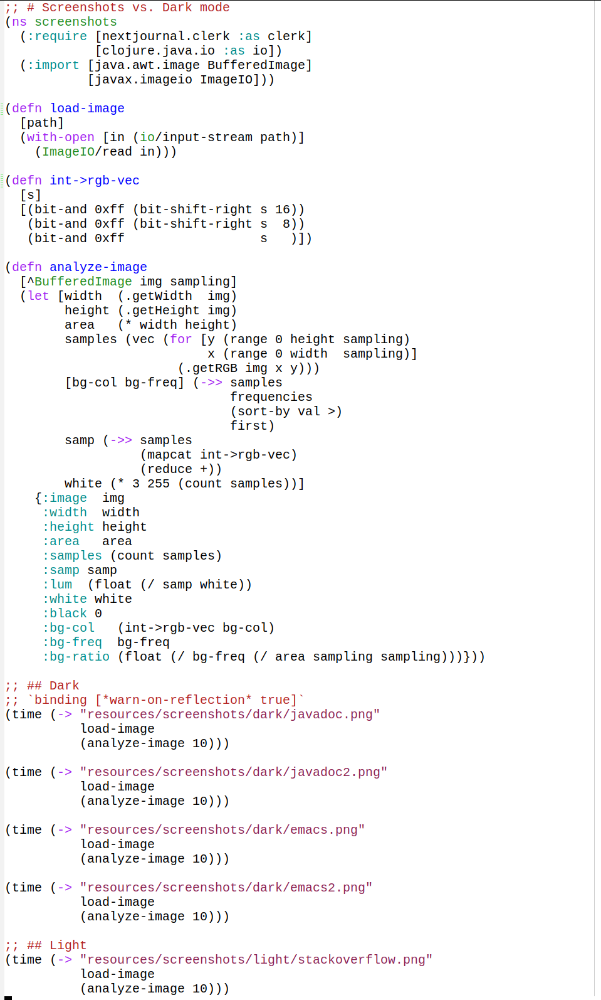

More text here.
 


Here is some filler text. Here is some filler text. Here is some filler text. Here is some filler text. Here is some filler text. Here is some filler text. Here is some filler text.
More text here.
 